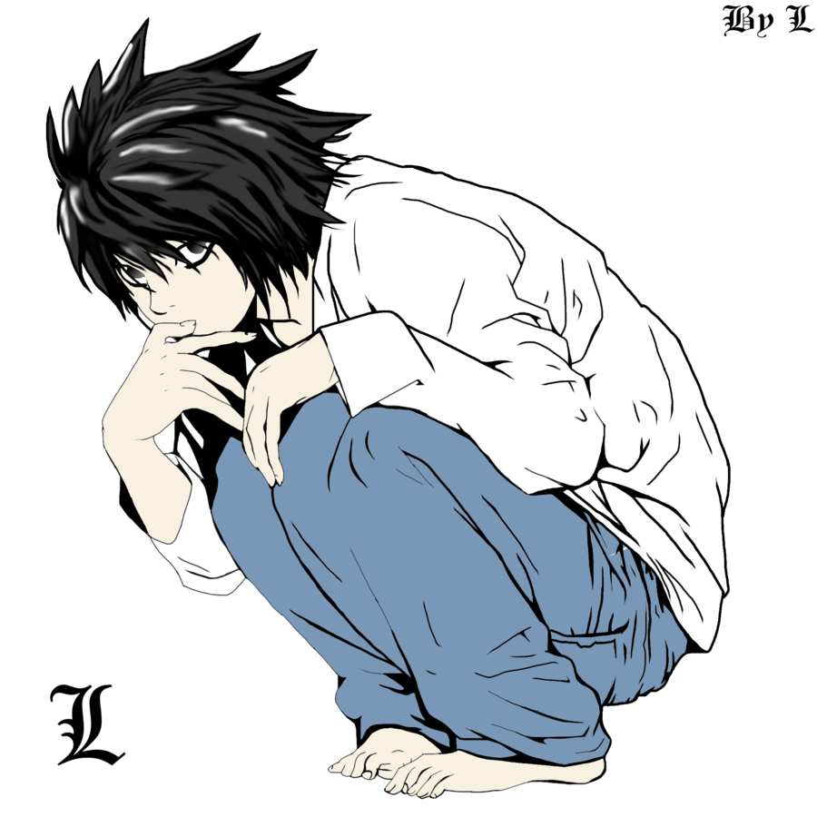
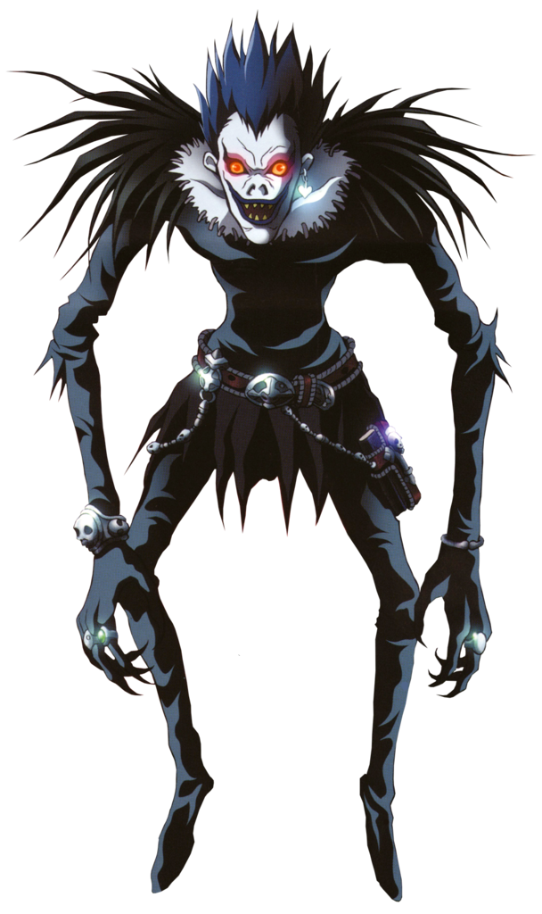
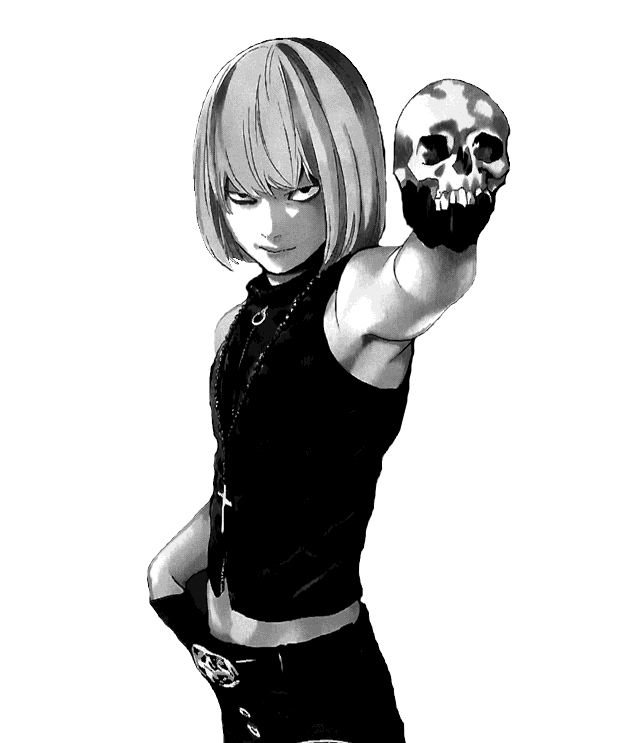

Light Yagami
( japonês :夜神月ライト Yagami Raito ) é o principal protagonista da série de mangá Death Note , criada por Tsugumi Ohba e Takeshi Obata . Ele é retratado como um gênio brilhante, mas entediado , que encontra o Death Note, um caderno sobrenatural sobrenatural que permite ao usuário matar qualquer pessoa sabendo seu nome e rosto, depois de ser descartado pelo Shinigami Ryuk . Frustrado com o status quo e a injustiça do mundo, Light usa o Death Note para matar aqueles que ele considera moralmente indignos da vida, planejando um massacre mundial como o vigilante . Kira (キラ) . Ao longo de seus esforços para criar um mundo livre do crime e do mal, sobre o qual ele serviria como uma figura divina, Light é perseguido por uma força-tarefa especial, liderada por um detetive consultor conhecido como L. Na adaptação do anime, ele é dublado por Mamoru Miyano em japonês e por Brad Swaile na versão em inglês. Na série de filmes live-action, ele é retratado por Tatsuya Fujiwara com Swaile reprisando seu papel como sua voz de dublagem em inglês; ele é retratado por Kenji Urai e Hayato Kakizawa no musical; no drama de TV, ele é interpretado por Masataka Kubota ; suas contrapartes no filme americano são retratadas por Nat Wolff e Margaret Qualley.
L Lawliet
( japonês :エル·ローライト Eru Rōraito ) conhecido mononimamente como L , é um personagem fictício da série de mangá Death Note , criada por Tsugumi Ohba e Takeshi Obata . Ele é um detetive consultor internacional enigmático, misterioso e altamente estimado, cuja verdadeira identidade e antecedentes são mantidos em segredo. Ele se comunica com as agências de aplicação da lei apenas por meio de seu manipulador/assistente igualmente inexplicável, Watari, que serve como seu elo oficial com as autoridades. Embora seu passado esteja envolto em mistério, ele ganhou a reputação de ser o maior detetive/criminoso do mundo.Ao longo da série, ele observa e espia as atividades do protagonista da série, Light Yagami , um gênio do ensino médio. L tenta expor Light como o infame serial killer " Kira ", que é responsável por massacrar criminosos de alto perfil em todo o mundo através de meios aparentemente sobrenaturais. À medida que a série avança, o jogo mental psicológico de gato e rato entre L e Light se intensifica, e cada um se empenha em descobrir a verdadeira identidade do outro através de uma série de estratagemas e esquemas intrincados. Ele serve como uma folha ideológica e visual para Light. Na adaptação do anime , ele é dublado por Kappei Yamaguchi em japonês, e por Alessandro Juliani em inglês. Ele é interpretado por Kenichi Matsuyama na série de filmes live-action, por Kento Yamazaki no drama de TV e por Lakeith Stanfield no filme americano .

Ryuk
Ryuk (リューク, Ryūku) é um Shinigami que segue o estudante Light Yagami após ter deixado o seu Death Note cair no mundo humano. Como todo Shinigami, Ryuk só pode ser visto por pessoas que tocaram em seu Death Note. Ele ama maçã e estava entediado com o Mundo dos Shinigami e propositadamente, largou o seu Death Note no mundos humanos, na esperança de se entreter.

Misa Amane
Misa Amane (弥 海砂, Amane Misa ) é uma modelo, atriz e apoiadora de Kira que eventualmente se torna a Segunda Kira. Depois de ganhar um Death Note , ela procura Kira para agradecê-lo por matar o homem que assassinou sua família e oferecer-lhe sua ajuda. Tendo feito a troca pelos Shinigami Eyes , Misa descobre que a identidade de Kira é Light Yagami . Após um encontro com Light, ela decide dedicar sua vida a ajudar Light como puder, e fica determinada a usar seus olhos para descobrir o verdadeiro nome de L

Rem
Rem (レム, Remu) é a Shinigami que dá Misa Amane seu Death Note. Como Ryuk, Rem possuía dois Death Notes. Rem, mesmo sendo uma Shinigami, ela se apaixonou por Misa e sacrificou-se para matar L. Ao fazê-la, ela foi reduzido a pó, deixando apenas seu Death Note.

Near
Nate River (ネイト・リバー, Neito Ribā), também conhecido como Near (ニ ア, Nia) ou L (エル, Eru), é o mais novo dos dois sucessores de L, criado no Orfanato Watari (Wammy's House) para crianças superdotadas em Winchester, Inglaterra. Após a morte de L , Near começa sua investigação no caso Kira, coletando provas durante um período de quatro anos. Near leva suas conclusões ao Presidente dos Estados Unidos e revela ser o verdadeiro sucessor de L. Logo depois, Near se torna o chefe da Provisão Especial para Kira e continua a busca por Kira. Depois de fazer contato com "L" (Light Yagami), Near começa a suspeitar que o atual L também é Kira. Ele é o segundo deuteragonista de Death Note e o mais jovem dos dois sucessores de L, criado no Orfanato Watari para Crianças Superdotadas.

Mello
Mihael Keehl, também conhecido como Mello (メロ, Mero), é o mais velho dos sucessores de L, criado no orfanato Wammy's House em Winchester, Inglaterra. Quando Roger decide que Mello deve trabalhar com Near para capturar Kira, ele se recusa, alegando uma incapacidade de trabalhar com alguém que é considerado de "segunda". Ele deixa o orfanato, logo depois, dizendo: "Eu vou encontrar meu próprio caminho", e, eventualmente, busca a ajuda da máfia.